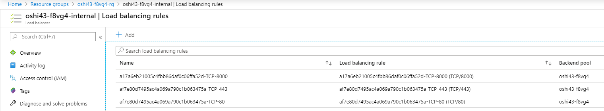

Egress, Ingress description/configuration
Ingress Egress definice a rozbor, in progress..
Egress, Ingress,Route configuration in OPENShift Azure
How to use custom ingress controller, what resources are provisioned on Azure after creating new Ingress/Route, can one Egress handle more namespaces/projects …
OCP Network configuration
Cluster base network configuration
primarysubnets:
master-subnet 10.2.0.0/19
worker-subnet 10.2.32.0/19
# SoftwareNetworkDefinition config
oc get cm sdn-config -o yaml -n openshift-sdn
# internal cluster networking
oc get network.config cluster -o yaml
# hostsubnet
oc get hostsubnet
NAME HOST HOST IP SUBNET EGRESS CIDRS EGRESS IPS
poshi4-8rlc7-master-0 poshi4-8rlc7-master-0 10.2.0.4 10.130.0.0/23
poshi4-8rlc7-master-1 poshi4-8rlc7-master-1 10.2.0.7 10.129.0.0/23
poshi4-8rlc7-master-2 poshi4-8rlc7-master-2 10.2.0.6 10.128.0.0/23
poshi4-8rlc7-worker-westeurope1-vqbc4 poshi4-8rlc7-worker-westeurope1-vqbc4 10.2.32.4 10.129.2.0/23
poshi4-8rlc7-worker-westeurope2-hfprt poshi4-8rlc7-worker-westeurope2-hfprt 10.2.32.6 10.128.2.0/23
poshi4-8rlc7-worker-westeurope3-p6b8z poshi4-8rlc7-worker-westeurope3-p6b8z 10.2.32.5 10.131.0.0/23
#pods in namespace IP and hostIP addresses:
oc get pods -o json|jq -r '.items[]|{podName:.metadata.name,podIP:.status.podIP,hostIP:.status.hostIP}'
Egress
Egress IP addresses are implemented as additional IP addresses on the primary network interface of the node and must be in the same subnet as the node’s primary IP address.
Define Egress
First we need to define a free pool of egress adresses for nodes.
Define Egress adresses for NODES:
# define egress CIDR on all worker nodes for Egress automatic allocations
oc patch hostsubnet poshi4-8rlc7-worker-westeurope3-p6b8z --type=merge -p \
'{"egressCIDRs": ["10.2.32.0/24"]}'
oc patch hostsubnet poshi4-8rlc7-worker-westeurope1-vqbc4 --type=merge -p \
'{"egressCIDRs": ["10.2.32.0/24"]}'
oc patch hostsubnet poshi4-8rlc7-worker-westeurope2-hfprt --type=merge -p \
'{"egressCIDRs": ["10.2.32.0/24"]}'
# to delete
oc patch hostsubnet poshi4-8rlc7-worker-westeurope3-p6b8z --type=merge -p \
'{"egressCIDRs": null}'
# single IP assigment
oc patch hostsubnet oshi43-f8vg4-worker-westeurope3-5rv87 --type=merge -p \
'{ "egressIPs": ["10.3.32.7"]}'
Assign egress adress to namespace:
# assign IP address for egress on namespace
oc patch netnamespace blaster --type=merge -p \
'{"egressIPs": ["10.3.32.17"]}'
# to delete
oc patch netnamespace blaster --type=merge -p \
'{"egressIPs": null}'
oc patch netnamespace master --type=merge -p \
'{"egressIPs": null}'
Egress IP decomposition, one egress adress for one namespace
for egress create/delete I wrote a small script addingress.fish
./addingress add
NAME NETID EGRESS IPS
blaster 13327141 [10.2.32.10]
NODE EGRESS IPS
poshi4-8rlc7-worker-westeurope3-p6b8z [10.2.32.10]
#login to node with defined Egress
oc debug node/poshi4-8rlc7-worker-westeurope3-p6b8z
ip a
eth0: <BROADCAST,MULTICAST,UP,LOWER_UP> mtu 1500 qdisc mq state UP group default qlen 1000
link/ether 00:0d:3a:ad:7a:a2 brd ff:ff:ff:ff:ff:ff
inet 10.2.32.5/19 brd 10.2.63.255 scope global noprefixroute eth0
valid_lft forever preferred_lft forever
inet 10.2.32.10/19 brd 10.2.63.255 scope global secondary eth0:eip
valid_lft forever preferred_lft forever
#egress ip is set as secondary adress for primary interface
ovs-ofctl -O OpenFlow13 dump-flows br0 table=100
reg0=0xcb5b25 actions=set_field:c6:0b:ec:f2:c0:fe->eth_dst,set_field:0x1cb5b24->pkt_mark
req0=0xcb5b25 --> to decimal 13327141 (NETID)
iptables -t nat -S POSTROUTING
-P POSTROUTING ACCEPT
-A POSTROUTING -m comment --comment "rules for masquerading OpenShift traffic" -j OPENSHIFT-MASQUERADE
-A POSTROUTING -m comment --comment "kubernetes postrouting rules" -j KUBE-POSTROUTING
iptables -t nat --list|grep -B 2 "10.2.32.10"
target prot opt source destination
SNAT all -- 10.128.0.0/14 anywhere mark match 0x1cb5b24 to:10.2.32.10
./addingress del
Egress IP decomposition with one Egress IP for two different Namespaces
IP for egress is removed from hostsubnet after I created one for second namespace. So the conclusion is that we cannot use ONE EGRESS IP for two namespaces
test:
# two namespaces: master,blaster
oc patch hostsubnet poshi4-8rlc7-worker-westeurope3-p6b8z --type=merge -p \
'{"egressCIDRs": ["10.2.32.0/24"]}'
oc patch netnamespace blaster --type=merge -p \
'{"egressIPs": ["10.2.32.10"]}'
oc get hostsubnets poshi4-8rlc7-worker-westeurope3-p6b8z -o json|jq -c '.egressIPs'
oc patch netnamespace master --type=merge -p \
'{"egressIPs": ["10.2.32.10"]}'
oc get hostsubnets poshi4-8rlc7-worker-westeurope3-p6b8z -o json|jq -c '.egressIPs'
>> null
# node debug
oc debug node/poshi4-8rlc7-worker-westeurope3-p6b8z
iptables -t nat --list|grep "10.2.32.10"
>> empty
Conclusion and workaround to enable one egress IP for two namespaces
- pokud je automatické nastavování egressIP na uzlu (podle CIDR), tak odebere danou egressIP z uzlu
- odebere danou sekundární IP adresu ze síťového rozhraní na nodu
- zablokuje komunikaci z NS na úrovni OpevVSwitch (actions=drop) cookie=0x0, duration=236.786s, table=100, n_packets=0, n_bytes=0, priority=100,reg0=0xedb1c5 actions=drop
- smaže odpovídající SNAT
workaround:
# nastavení sekundární IP adresy
ip a add 10.3.32.7/19 dev eth0 broadcast 10.3.63.255 label eth0:eip
# nastavení SNAT
iptables -t nat -I OPENSHIFT-MASQUERADE 1 -s 10.128.0.0/14 -m mark --mark 0xd9d8f0 -j SNAT --to-source 10.3.32.7
iptables -t nat -I OPENSHIFT-MASQUERADE 1 -s 10.128.0.0/14 -m mark --mark 0x1edb1c4 -j SNAT --to-source 10.3.32.7
# tohle nastaveno taky, ale nemělo by být pro test důležité
iptables -t filter -A OPENSHIFT-FIREWALL-ALLOW -d 10.3.32.7/32 -m conntrack --ctstate NEW -j REJECT --reject-with icmp-port-unreachable
# zrušení drop pravidel (resp. všech pravidel pro dané netid v tabulce 100)
ovs-ofctl -O OpenFlow13 del-flows br0 "reg0=0xd9d8f0"
ovs-ofctl -O OpenFlow13 del-flows br0 "reg0=0xedb1c5"
# nastavení označení paketů (pro průchod výše uvedeným SNAT pravidlem) - vzal jsem to dle výpisu, mnoho polí nejspíš není třeba nastavovat
ovs-ofctl -O OpenFlow13 add-flow br0 "cookie=0x0, duration=9.187s, table=100, n_packets=0, n_bytes=0, priority=100,ip,reg0=0xd9d8f0 actions=set_field:46:d1:e9:2d:fe:e8->eth_dst,set_field:0xd9d8f0->pkt_mark,goto_table:101"
ovs-ofctl -O OpenFlow13 add-flow br0 "cookie=0x0, duration=52.431s, table=100, n_packets=0, n_bytes=0, priority=100,ip,reg0=0xedb1c5 actions=set_field:46:d1:e9:2d:fe:e8->eth_dst,set_field:0x1edb1c4->pkt_mark,goto_table:101"
AZURE INFRAstructure limitation
- common problem: Pokud nadefinuji Egress adresu vytvori se pouze na OCP nodu, nevytvori se na Azure VM a je nutne ji vytvořit ručně. Failover by se taky musel dělat ručně.
- public LB: When I set an Ingress for namespace, no workload will get out from Cluster. In case no Egress is defined I got sourceIP as a IP adress of LoadBalancer. Standard LoadBalacer with public IP has backend pool with Worker VM and their primary NIC adress and doing SNAT(implicitly, can be turned off). When I create an Egress new IP is created and such a IP is not in backend pool. Test for egress defined with for UDR instead of loadbalancing (SNAT). Nejsem si jist zda bude nutne mit nadefinovanou adresu na azureVM pokud pouzijeme UserDefinedRouting.
For public access with Egress NAT GATEWAY should be used, it is defined against subnet but in preview.
Ingress
- If you have HTTP/HTTPS, use an Ingress Controller.
- If you have a TLS-encrypted protocol other than HTTPS. For example, for TLS with the SNI header, use an Ingress Controller.
- Otherwise, use a Load Balancer, an External IP, or a NodePort.
INGRESS Controller
-
- each workload namespace should have own IPadress(and DNS record) for routes which will access only resources in this namespace.
-
- each workload namespace namespace will have own ingress controller.
INGRESS Controller Azure Infrastructure facts
# default ingress controller
oc get -n openshift-ingress-operator ingresscontrollers default -o yaml
endpointPublishingStrategy:
loadBalancer:
scope: External
type: LoadBalancerService
oc get infrastructure.config.openshift.io cluster -o yaml
apiServerInternalURI: https://api-int.oshi43.csas.elostech.cz:6443
apiServerURL: https://api.oshi43.csas.elostech.cz:6443
etcdDiscoveryDomain: oshi43.csas.elostech.cz
infrastructureName: oshi43-f8vg4
platform: Azure
platformStatus:
azure:
networkResourceGroupName: oshi_vnet_rg
resourceGroupName: oshi43-f8vg4-rg
type: Azure
cloud-provider-azure:cloud-provider-config
# config for Azure cloud
oc get configmap -n openshift-config cloud-provider-config -o yaml
ROUTE SHARDING
In OCP, each route can have any number of labels in its metadata field. A router uses selectors (also known as a selection expression) to select a subset of routes from the entire pool of routes to serve. A selection expression can also involve labels on the route’s namespace. The selected routes form a router shard.
IngressController for privateZone
#create internal ingresscontroller
apiVersion: v1
items:
- apiVersion: operator.openshift.io/v1
kind: IngressController
metadata:
name: internal
namespace: openshift-ingress-operator
spec:
domain: test.oshi43.csas.elostech.cz
endpointPublishingStrategy:
loadBalancer:
scope: Internal
type: LoadBalancerService
nodePlacement:
nodeSelector:
matchLabels:
node-role.kubernetes.io/worker: ""
routeSelector:
matchLabels:
type: internal
#created service
oc get svc -n openshift-ingress router-internal
NAME TYPE CLUSTER-IP EXTERNAL-IP PORT(S) AGE
router-internal LoadBalancer 172.30.42.50 10.3.32.9 80:31946/TCP,443:31190/TCP 37m
For defining external-IP, namespaceOperator will be used.


#create route that fullfill matchLabel
apiVersion: route.openshift.io/v1
kind: Route
metadata:
labels:
app: example
type: internal
...
Only route with type:internal label will be processed by internal IngressController By default, the default router have not routeSelector, and for this reason is exposed to both routes, also is exposed to the default.
Namespace selector in Route Sharding
Another selectors in the ingresscontrollers are the namespaceSelectors. This selectors, allow that only the routes exposed in that namespaces are served by the routers labeled with this.
#create internal ingresscontroller with namespaceSelector
apiVersion: v1
items:
- apiVersion: operator.openshift.io/v1
kind: IngressController
metadata:
name: internal
namespace: openshift-ingress-operator
spec:
domain: test.oshi43.csas.elostech.cz
endpointPublishingStrategy:
loadBalancer:
scope: Internal
type: LoadBalancerService
nodePlacement:
nodeSelector:
matchLabels:
node-role.kubernetes.io/worker: ""
routeSelector:
matchLabels:
type: internal
namespaceSelector:
matchLabels:
ingressname: test
#label namespace
oc label ns test ingressname=test
Ingress controller internal will be now used by routes in NS test
NON-HTTP traffic L4 TCP/UDP
USE AZURE INTERNAL LOADBALANCER
#service declaration
# OCP will create azureLB [infrastructureName]-internal with respective rule
[...]
metadata:
name: my-service
annotations:
service.beta.kubernetes.io/azure-load-balancer-internal: "true"
[...]
USE HA PROXY
!! Not supported by OCP right now!!! but with a little effort who knows ha proxy tcp-services-configmap